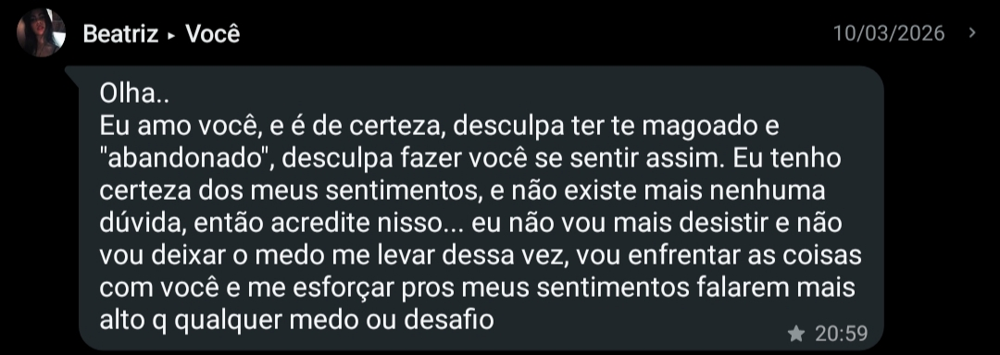
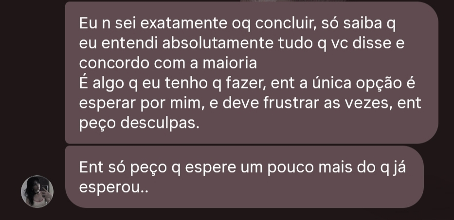

Existe uma possibilidade que, confesso, me assusta....
A possibilidade de que tudo o que vivemos tenha sido apenas uma parte passageira da sua história.
A
possibilidade de que você esteja realmente decidida a não me querer mais na sua vida. Assusta-me
pensar que, um dia, tudo aquilo que foi tão presente possa existir apenas em minhas memórias.
Que os
nossos momentos, nossas conversas, nossos abraços, nossos planos e até as pequenas coisas que só
nós
dois entendíamos possam se tornar apenas lembranças de uma história que não terá continuidade. E
talvez o que mais me assusta seja essa última possibilidade: a de realmente não existir um
futuro
entre nós dois.
Pensar nessas possibilidades é pensar que talvez eu não tenha conhecido você completamente, pensar
que o que você quer, e deseja, são coisas totalmente diferentes do que você me mostrou. E tá tudo
bem em relação a isso, somos jovens e ainda é cedo para descobrirmos mais sobre nossas vidas.
Talvez você tenha consciência de tudo aquilo que aconteceu, inclusive dos seus próprios erros, e
ainda assim não queira fazer diferente. Talvez você possa, sim, ainda gostar de mim, talvez até me
amar, mas simplesmente não estar disposta a construir uma relação comigo. E não há problema nenhum
nisso, da mesma forma que não é meu papel tentar convencer você a querer aquilo que você não quer.
No fim, tudo também passa por escolhas. Se vai escolher se conectar com outra pessoa futuramente. Se
vai escolher se despir para outra pessoa. Se vai escolher compartilhar seus sentimentos mais
profundos, seus medos, seus sonhos e aquelas partes de você que nem todo mundo conhece para outro
alguém... Talvez isso já tenha acontecido nesse período de tempo que nos desconectamos um do outro.
Talvez você tenha encontrado outros braços (embora eu já saiba que você está sim com outra pessoa
agora), talvez tenha beijado outros lábios, talvez, enquanto eu mal conseguia comer, você já
estivesse descobrindo a comida preferida de outra pessoa. Talvez esteja saindo com alguém que seja
do seu interesse. Talvez, no mesmo tempo em que eu estava preparando o seu presente e escrevendo
para você, já estivesse conhecendo outra pessoa da mesma forma como nos conhecemos lá no começo. E
não vai doer apenas imaginar você rindo, abraçando ou beijando outra pessoa. O que talvez doa de
verdade seja pensar que você alimentou tanto o amor entre nós e, no fim, escolheu nem sequer tentar.
Seria difícil não pensar que eu, justamente a pessoa que mais amou você, talvez nem tenha sido digno
de uma última tentativa. Não sei, talvez sim, talvez não, pensar em todas essas possibilidades me
deixa confuso. E, por mais que doa pensar nisso, eu não posso controlar nenhuma das suas escolhas.
Só posso respeitá-las, e aprender a aceitá-las. Porque eu sei que amar você também precisa
significar entender que você não me pertence, e nunca me pertenceu. E tudo bem. Eu sei que não sou
perfeito. Talvez eu não seja o garoto mais bonito, o mais engraçado ou o mais criativo. Talvez eu
ainda não tenha um meio de transporte para levar você aos lugares (agora eu tenho), embora, mesmo
amando andar sozinha e ouvir música, você ainda tenha essa preguicinha de ir a alguns lugares.
Kkkkk. Eu sei que existem pessoas que podem ser mais bonitas, mais engraçadas, mais interessantes ou
que possam oferecer coisas que eu ainda não consigo oferecer. No fim, nunca foi sobre ser melhor do
que alguém. Mas, saber que você se dedicou tanto para um “Nós” existir, e nem sequer ter dado uma
chance para existir de verdade, dói.
Às vezes eu me pego pensando: como você conseguiu elevar tanto as minhas expectativas e, depois, me
deixar com a sensação de que talvez ninguém mais consiga corresponder a elas? Como você conseguiu me
fazer acreditar tanto nas suas palavras e, depois, me deixar tão despedaçado naquela tarde, como se
tudo aquilo que vivemos e tudo aquilo que você significou para mim pudesse simplesmente desaparecer
de uma hora para outra? Você percebe que, mesmo depois de tudo e de tanto, você não conseguiu nem
sequer se despedir com um pedido de desculpas decente? Como se isso fosse algo natural, como se tudo
o que foi alimentado e causado fosse algo “comum”. E não estou dizendo isso porque você escolheu a
si mesma. Você tinha, e ainda tem, todo o direito de escolher a sua paz, a sua vida e o caminho que
quer seguir. Mas, em nenhum momento, pareceu que você parou para pensar no tamanho daquilo que
estava fazendo comigo. Você simplesmente tomou a sua decisão e seguiu em frente, enquanto eu fiquei
tentando entender como alguém que havia me feito acreditar tanto em nós poderia, de repente, agir
como se toda aquela intensidade pudesse simplesmente ser deixada para trás. Foi egoísta não
reconhecer a dimensão da dor que você causou. Foi egoísta não olhar para mim e dizer, com
sinceridade: “Eu sei que te machuquei. Sei que ajudei a construir expectativas em você. Sei que fiz
você acreditar em nós, e sinto muito por aquilo que estou deixando para trás.” Eu precisava, pelo
menos, sentir que você entendia o estrago que deixou em mim.


É estranho pensar que, até pouco tempo atrás, você me dizia para “esperar apenas mais um pouco” e
ter
paciência. E agora, enquanto eu imagino que você possa estar seguindo em frente, conhecendo outras
pessoas e vivendo outras experiências, eu fico aqui tentando carregar e conviver com toda essa dor,
com toda essa expectativa e com toda essa confiança que, um dia, você mesma ajudou a cultivar em
mim. E talvez seja isso que mais me doa: sentir que, agora, tudo aquilo parece ter sido colocado
apenas nas minhas mãos, como se eu tivesse construído sozinho uma esperança que, em algum momento,
nós dois alimentamos. Eu sei que não posso cobrar de você que continue sentindo aquilo que sentia
antes. Sei que as pessoas mudam, os sentimentos mudam e que você tem o direito de escolher outro
caminho. Mas também preciso ser honesto sobre o que ficou em mim. Porque eu não inventei sozinho
tudo aquilo em que acreditei. Nós dois construímos expectativas. Nós dois alimentamos sentimentos.
Nós dois acreditamos, em algum momento, que ainda valia a pena tentar.
E talvez seja por isso que seja tão difícil para mim aceitar que, agora, eu pareça ser o único
carregando o peso de tudo aquilo que um dia foi nosso. 💔
Agora estou nessa linha tênue entre quem você é agora e quem era aquela pessoa que estava comigo por
mais de 1 ano..., e sinceramente? Eu só posso apostar na pessoa que você era quando estava comigo,
pois foi por ela que eu me apaixonei. Não idealizei, eu vi, foi mostrado, foi dito, foi sentido, foi
vivido. Eu estou fazendo isso por mim, pelos meus sentimentos e pela Beatriz que você me mostrou.
Mesmo estando nessa linha tênue entre quem você é agora e quem era a pessoa que você mostrou ser, eu
ainda acredito na Beatriz que eu conheci. Naquela que veio sorrindo em minha direção na academia pra
conversar comigo pela primeira vez. Naquela que se arriscava pelos nossos momentos afetivos. Naquela
que disfarçava nossa relação para me aproximar da própria família aos poucos. Naquela que mesmo indo
embora uma vez, decidiu voltar e tentar de verdade.
Talvez você seja o tipo de pessoa que encontra mais prazer e felicidade adotando uma personalidade
mais “solta”, mais leve. Talvez você se encante mais com começos, com relações casuais, rasas.
Talvez você tente se convencer de que na verdade nem queira um relacionamento agora, mas logo já se
vê dentro de outra relação afetiva com outra pessoa (como está fazendo agora). Talvez você sinta
mais prazer em flertar e ser desejada por outras pessoas, mesmo que isso não te leve a nenhum
relacionamento de verdade. Talvez seus novos amigos ou as pessoas com quem você saia proporcionem
pra você uma felicidade que eu não sou capaz de proporcionar, e no meio dos seus picos de diversões,
meu nome não seja citado, e você nem lembre da minha existência. Talvez esses prazeres momentâneos
que você cultiva seja o que você precisa, ou que mais gosta. Mas, no meu ponto de vista, isso já não
é sobre “amor”, é sobre controle. É sobre estar em uma (ou mais) relações onde você não precisa
lidar com aquilo que mais evita
Sinceramente, tudo isso pode acontecer. Você tem o direito de descobrir o que te faz feliz, de
experimentar outras formas de viver, de conhecer outras pessoas e de escolher aquilo que faz sentido
para você. Eu não posso decidir quais experiências você deve ou não viver, muito
menos determinar
onde você encontrará a sua felicidade. Mas se pra você isso tudo for o que te faz sentir prazer,
felicidade e liberdade, então talvez você nunca tenha sido a pessoa que me mostrou
ser. Não porque
eu ache que você tenha que continuar sendo a pessoa que eu conheci para corresponder às minhas
expectativas, mas porque aquela Beatriz deixou uma marca muito específica em mim. E seria algo que
nunca mais me faria te olhar da mesma forma como um dia te olhei.
Isso porque, a Beatriz que você me mostrou é alguém que não precisa ser vista e nem validada por
qualquer pessoa para encontrar a paz e se sentir bem consigo mesma. E que em um mundo cheio de
futilidades, trivialidades e vulgaridade, tudo que é superficial não combina com essa que eu
conheci. E foi isso que me fez admirar você desde o começo. Alguém que apesar de viver na
superfície, quando se permitia mergulhar, encontrava um mundo inteiro dentro de si. E posso dizer: o
que me fez amar você foi a profundidade que eu enxerguei em você. Alguém com medo, mas disposta a
tentar. Alguém com um mar de sentimentos para dar, e disposta a sair desse aquário onde
vive. E te
ver tentar isso comigo, do meu lado, me fez sentir um amor inteiramente verdadeiro e
profundo.
Eu sei que tudo nessa vida é passageiro, Beatriz. Nada dura para sempre, sejam emoções, sejam
momentos, ou até pessoas. Mas, enquanto existir uma possibilidade, enquanto ainda houver uma pequena
chance e enquanto eu continuar regando aquilo que sinto por você, eu escolho acreditar. E acreditar
que ainda podemos um dia viver algo bonito também é válido. Algo diferente de tudo aquilo que já
vivemos, construído com mais maturidade, mais calma, mais respeito pelos nossos limites e,
principalmente, com tudo aquilo que aprendemos um com o outro. Não porque eu tenho certeza de que
isso vai acontecer, sou ciente de que o futuro é incerto, mas porque eu sei que se permitir tentar
também pode nos levar a bons caminhos. Quantas vezes durante nossas vidas já deixamos para trás
caminhos que poderiam ser cheios de felicidade e conforto só por que ficamos com medo de tentar? É
difícil dizer isso — e até um pouco doloroso para o meu orgulho admitir —, mas eu não quero que você
deixe “a gente” se perder sem sequer nos dar a chance de descobrir o que “a gente” poderia ser de
verdade. Não importa o quão bonito seja o tom de roxo que eu possa trazer para sua vida, nada disso
importa, ou faria diferença, se você estiver decidida a não enxergar e estiver decidida a abandonar
qualquer sentimento romântico para evitar isso.
Talvez eu quebre um pouco uma ideia que você possa ter sobre mim, caso pense que na verdade
eu me apaixonei apenas pelo que idealizei em você. Olha, eu tenho idade, consciência e maturidade
suficientes
para reconhecer a diferença entre estar encantado por uma ideia, e amar uma pessoa de verdade. Mas
eu preciso ser honesto, no começo, eu fiz projeções em você. Eu te idealizei. Criei, na minha
cabeça, algumas das melhores versões possíveis de você e, de certa forma, me apaixonei por elas.
Isso até eu conhecer você de verdade...Quando conheci seus medos, suas inseguranças, suas
contradições, seus defeitos, suas manias e até aquelas
partes suas que talvez você mesma não goste tanto. Foi justamente aí que percebi que aquilo que eu
sentia já não era apenas encantamento, ou uma paixão idealizada. Eu estava amando você.
E é isso que muitos vão fazer, vão se apaixonar pelo seu começo, pela sua superficialidade, pela
garota alegre e apaixonante que você demonstra ser no início. Mas e quando a outra pessoa for
desafiada pelas suas dificuldades? Enquanto existe espaço para uma idealização, uma paixão pode
mesmo ser leve, bonita e perfeita. Basta olhar para alguém e enxergar principalmente aquilo que
queremos enxergar, sem que os defeitos tenham peso suficiente para quebrar a imagem que criamos. E
sendo bem sincero, você é cheeeia de defeitos, vi e convivi com muitos deles. Já o amor, esse é mais
profundo, áspero, complicado e exigente. Olhei para tudo aquilo que poderia me machucar, para as
partes difíceis de compreender, para os medos, as suas inseguranças, para as suas contradições e a
nossas maneiras diferentes de amar... e, ainda assim, em nenhum momento senti vontade de fugir. E
isso não era desrespeito comigo mesmo, nem autoabandono. Eu estava sendo fiel ao que eu sentia.
Porque eu não amava mais uma versão perfeita de você. Eu amava você.
Percebi que o amor traz à tona feridas que, quando se está sozinho(a), elas não se manifestam. E
algumas dessas feridas e inseguranças só aparecem quando existe alguém importante o suficiente para
tocar nelas. Talvez eu possa ter tocado as suas, assim como você tocou as minhas. Mas será que demos
o nosso máximo para construir algo relativamente mais confortável para ambos? Tantas incertezas,
tantas dúvidas. Talvez a razão pela qual tudo parecia tão incerto era porque estávamos no meio de
uma transformação, nos tornando pessoas melhores, que nunca fomos antes. Alguém que se permita viver
bem e feliz não só através da razão, mas também dos sentimentos. E essa nova versão exige mudanças,
uma vida diferente, hábitos novos e diferentes, pessoas diferentes... então é claro que causa
desconforto. Talvez não estávamos perdidos, talvez estivéssemos apenas no meio de uma transição.
Mas, nada disso é uma certeza, ou a “realidade”.
Certa vez, durante uma de nossas conversas complexas (ano passado), eu perguntei para você “por que
você está comigo?”, e teve uma parte na sua resposta que me chamou bastante atenção: “Você é único,
eu conheço muita gente e não te acho parecido com ninguém, você é uma pessoa totalmente ligada nos
detalhes e eu amo isso, amo a sensação de ser ouvida e não só ouvir, a forma que as coisas que eu
falo e você realmente leva a sério, coisas pequenas, todo dia você faz algo que me faz saber que
você pensou em mim pra fazer aquilo”. Talvez você nem imagine o quanto essas palavras significaram
para mim. Porque, naquele momento, você estava me dizendo, com as suas próprias palavras, exatamente
o que encontrava em mim e o que fazia com que eu fosse diferente para você. E é justamente por isso
que eu não consigo olhar para tudo o que vivemos como algo pequeno ou sem importância. Porque eu me
lembro da maneira como você me enxergava, eu me lembro daquilo que você sentia quando estava comigo.
E principalmente, eu me lembro de como você mesma descreveu o lugar que eu ocupava na sua vida.
Você é assim. Você não se apaixona e nem cria sentimentos por alguém de forma superficial. Você
admira muito mais do que apenas a beleza física; você admira o mundo que existe dentro de alguém, a
forma como essa pessoa vive, enxerga a vida, e pensa. Por isso que para você, perguntas são mais
admiráveis do que elogios, porque te permite conhecer o mundo de alguém, e esse alguém conhecer o
seu mundo. É assim que a gente se apaixona: sem esperar demais, sem pedir licença, sem procurar uma
razão para explicar o que está sentindo. Você simplesmente sente, e quando percebe, aquele
sentimento já encontrou um lugar dentro de você. Então, às vezes eu me pergunto: em que momento você
conseguiu bloquear tantas emoções, e talvez até todas aquelas que um dia sentiu (ou que ainda sente)
por mim?
É lindo ver como você prioriza a si mesma, sua própria companhia, sua autonomia e a sua paz. E,
sinceramente, espero que você nunca perca isso. Mas você sabe, talvez melhor do que ninguém, que
existe uma coisa que nem mesmo toda essa autonomia consegue controlar: com quem o seu coração vai
criar uma conexão. Eu não escolhi gostar de você, e você não escolheu gostar de mim. Eu não estava
procurando ninguém quando te encontrei, e você também não estava procurando ninguém quando me
encontrou. Simplesmente aconteceu! Podemos, sim, seguir nossas vidas sem o afeto um do outro.
Podemos aprender a viver sem a companhia, sem as conversas, sem os pequenos gestos e até sem a
presença que um dia fez parte da nossa rotina. Mas existe uma diferença entre escolher seguir em
frente, e escolher aquilo que vamos sentir. A saudade do afeto, da companhia, da conexão... essas
coisas não pedem permissão para existir!
Eu te amei por escolha, não por necessidade de companhia, sei muito bem ficar sem você, não
necessitava do seu carinho e afeto para sobreviver, e não necessito agora. Posso muito bem deixar de
regar esses sentimentos até eles sumirem. Não preciso me rebaixar para ter você, nunca precisei, e
não preciso convencê-la do meu valor. Você sabe como eu amo, sabe como é linda minha forma de amar,
e você amou ser amada por mim. É como Lacan já dizia: “Amar é dar o que não se tem a alguém que não
quer”. Então qual o motivo de tudo isso agora? É difícil explicar..., mas...eu quero construir um
jardim, Beatriz. Mas não quero qualquer borboleta pousando nele, e se eu puder permitir que uma
borboleta entre e fique, quero que seja você. E se eu puder plantar lírios roxos para que você se
sinta mais à vontade, assim eu farei.
Com o passar dos dias, a nova rotina, meus novos hobbies e outras proximidades me fizeram conhecer
outras pessoas. Conheci alguém que treina no mesmo horário que eu, e confesso que alguns momentos me
lembram como era quando eu estava com você lá na academia. Eu estava me sentindo bem, me sentia bem
por ter com quem conversar durante os treinos, e treinar junto as vezes. Mas houve uma situação que,
por alguma razão, me deixou nervoso, e fez meu coração acelerar: Eu estava treinando normalmente,
fazendo leg press, aquela pessoa chegou e disse: “Só isso? Vamos criar vergonha na cara né, mais de
um ano de academia”. Parei meu treino, e por alguma razão não gostei de ouvir o que ouvi. Por um
momento pensei que aquilo tinha me afetado, mas temos intimidade o suficiente pra ficar brincando
assim um com o outro. Senti algo estranho, foi como se aquelas palavras em forma de “humilhação” não
pertencessem àquela pessoa. Não posso dizer que foi apenas saudades de você, também não posso dizer
que foi apenas um flashback, mas posso dizer que foi o suficiente para me deixar o resto da noite
confuso. Antes de dormir, ela perguntou por mensagem se eu fiquei incomodado com a brincadeira, mas
nem eu sabia muito bem o que senti. Foi como se eu não quisesse ser “humilhado” por outra pessoa.
Minha consciência não entendeu, e meu coração rejeitou ( pra completar, a mesma pessoa foi me
visitar, e perguntou quem deu o nome de “Mel” para a minha gatinha....).
Foi quando eu percebi que, posso encontrar em outras pessoas os mesmos prazeres que encontrava em
você. Mas não é a mesma coisa. A felicidade não é a mesma, as brincadeiras não são as mesmas, os
gestos não são os mesmos, as mãos não são as mesmas, o beijo não é o mesmo. Cada detalhe que tornava
os nossos momentos especiais existia justamente porque era nosso. E talvez seja isso que eu tenha
demorado para entender: não sinto falta apenas de ter alguém ao meu lado. Sinto falta de você. Posso
passar algumas horas sem pensar em você. Posso me distrair, conversar com outras pessoas, rir e
viver normalmente. Mas, quando chego em casa e encosto a cabeça no travesseiro, toda aquela
distração desaparece, e a sua ausência volta a ocupar um espaço que ninguém mais conseguiu ocupar.
Perdi as contas de quantas vezes tentei convencer a mim mesmo de que você foi apenas uma fase ruim
na minha vida. Tentei me convencer de que você foi apenas uma pessoa que chegou quando eu estava em
paz, despertou coisas em mim que eu nem sabia que ainda existiam e, depois, foi embora. Tentei me
convencer de que você apenas encontrou conforto no meu amor e, quando já não precisava mais dele,
simplesmente descartou... Tentei encontrar uma versão da nossa história que tornasse mais fácil
aceitar o fim, mas não consegui. Porque, apesar de tudo o que aconteceu, apesar das dores, dos erros
e da forma como tudo terminou, uma parte de mim ainda olha para a nossa história e enxerga muito
mais do que uma fase ruim. Foram sentimentos reais.
Às vezes, quando me deito para dormir, me pego pensando se você também não pensa na possibilidade de
tudo que poderia dar certo. Me pergunto se você se faz questionamentos como: “e se eu tivesse
tentado de outra forma?”, “e se estiver deixando de lado algo importante e necessário para minha
vida?”, “será que minhas escolhas eram o único caminho possível para seguir?”.
Penso se também sente minha falta assim como eu sinto a sua. Mas eu não falo de saudades da rotina,
das declarações, ou saudade das sensações boas que você sentia nos bons momentos. Você pode ter
pensado que a saudade era apenas a dificuldade de aceitar o fim, de lidar com o luto. Pode ter
pensado que era saudades dos momentos, da rotina, e não da pessoa em si.
Eu falo daquela saudade que, mesmo em dias cheios onde sua cabeça está a mil, você ainda pensa em
mim, ou melhor, em nós dois. E Sabe o que eu acho? Mesmo não tendo certeza, ainda acho que sentiu
saudades. Não só da minha pessoa, mas de quem você era quando eu estava amando você, de quando você
estava me amando, e nos momentos que você se sentia confortável nesse amor.
Sei que sentiu minha falta, ou talvez ainda sinta, mesmo eu não tendo certeza dos momentos ou da
frequência que possa sentir. Talvez em um sábado qualquer, de madrugada, quando a gente falava
besteira ou assistíamos doramas no RAVE. Talvez depois de uma noite agitada com seus amigos, ao
deitar a cabeça no travesseiro, fechar os olhos e se preparar para dormir, você se pegue pensando em
mim. Ou até quando estiver completamente sozinha sem ocupar a sua mente, e mesmo sem se sentir
sozinha, você pensa em mim. Talvez quando foi se arrumar pra sair e colocou aquela sua calça
favorita, uma das camisetas ou até os acessórios que dei. Talvez quando sair da academia e olhar
para aquele cantinho lá fora, e lembrar dos momentos “arriscados” kkkkkk. Talvez quando ouvir suas
músicas favoritas e lembrar que eu também gostava das mesmas, ou quando eu não conhecia, ouvia junto
com você para escolher as que iam para minha playlist. Talvez quando comprar uma barrinha de
proteína e lembrar que eu comprava e te entregava com bilhetinhos. Talvez quando você cortar o
dedinho novamente (Tá repreendido kkkk) e lembrar que eu comprei pomadas e curativos, porque me
preocupava com o mínimo de machucados em você. Talvez quando estiver com TPM desejando taaanto um
chocolatinho, tarde da noite, e lembrar que nem o horário mais perigoso me impedia de te
proporcionar o que você desejava. Talvez quando você comer aquele pote de pipoquinha cheia de doce e
lembrar que a gente ainda ia fazer juntos. Talvez quando você ver algo relacionado a Harry Potter e
lembrar que assistimos todos os filmes da saga. Ou quando você ver seu tio assistindo um jogo do
flamengo, lembrar das minhas reações exacerbadas com os resultados dos jogos kkkkk. Talvez depois de
uma aula horrível na faculdade e eu estava aqui para ouvir suas reclamações. Talvez depois de sua
mãe comprar doces quando você dissesse que ia começar uma dieta, e você me mandava áudio indignada
com ela kkkkk. Principalmente nesses momentos em que você vinha correndo me contar algo importante
que aconteceu, e eu ouvia como se fosse a história mais importante do mundo.
São esses momentos e situações que te farão perceber que mesmo você sendo uma bagunça, eu
sempre estive aqui.